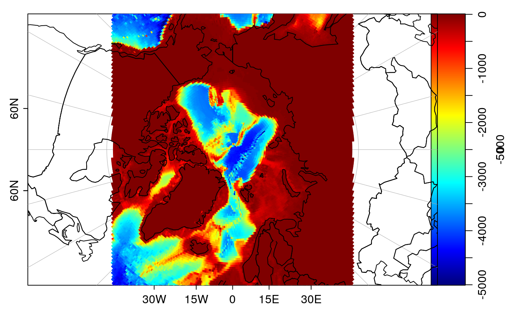
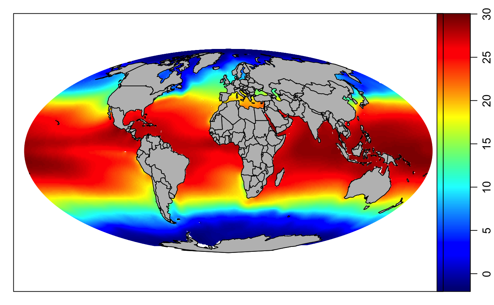
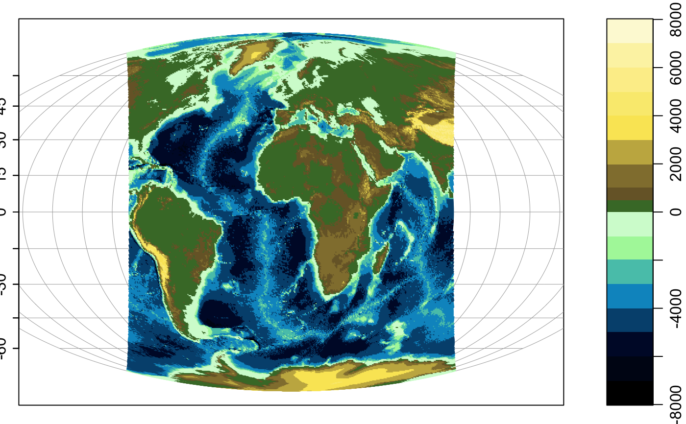

Plot an image on an existing map that was created with mapPlot().
(See example 4 for a way to start with a blank map.)
mapImage( longitude, latitude, z, zlim, zclip = FALSE, breaks, col, colormap, border = NA, lwd = par("lwd"), lty = par("lty"), missingColor = NA, filledContour = FALSE, gridder = "binMean2D", debug = getOption("oceDebug") )
Arguments
| longitude | vector of longitudes corresponding to |
|---|---|
| latitude | vector of latitudes corresponding to |
| z | matrix to be represented as an image. |
| zlim | limit for z (color). |
| zclip | A logical value, |
| breaks | The z values for breaks in the color scheme. If this is of
length 1, the value indicates the desired number of breaks, which is
supplied to |
| col | Either a vector of colors corresponding to the breaks, of length
1 plus the number of breaks, or a function specifying colors,
e.g. |
| colormap | optional colormap, as created by |
| border | Color used for borders of patches (passed to
|
| lwd | line width, used if borders are drawn. |
| lty | line type, used if borders are drawn. |
| missingColor | a color to be used to indicate missing data, or
|
| filledContour | either a logical value indicating whether to use
filled contours to plot the image, or a numerical value indicating the
resampling rate to be used in interpolating from lon-lat coordinates to
x-y coordinates. See “Details” for how this interacts with
|
| gridder | Name of gridding function used if |
| debug | A flag that turns on debugging. Set to 1 to get a moderate amount of debugging information, or to 2 to get more. |
Details
The data are on a regular grid in lon-lat space, but not in the projected
x-y space. This means that image() cannot be used. Instead,
there are two approaches, depending on the value of filledContour.
If filledContour is FALSE, the image pixels'' are with [polygon()], which can be prohibitively slow for fine grids. However, if `filledContour` is `TRUE` or a numerical value, then the pixels'' are remapped into a regular grid and then displayed with
.filled.contour(). The remapping starts by converting the
regular lon-lat grid to an irregular x-y grid using
lonlat2map(). This irregular grid is then interpolated onto a
regular x-y grid with binMean2D() or with
akima::interp() from the akima package, as determined by
the gridder argument. If filledContour is TRUE, the
dimensions of the regular x-y grid is the same as that of the original
lon-lat grid; otherwise, the number of rows and columns are multiplied by
the numerical value of filledContour, e.g. the value 2 means to make
the grid twice as fine.
Filling contours can produce aesthetically-pleasing results, but the method involves interpolation, so the data are not represented exactly and analysts are advised to compare the results from the two methods (and perhaps various grid refinement values) to guard against misinterpretation.
If a png() device is to be used, it is advised to supply
arguments type="cairo" and antialias="none"; see reference 1.
References
See also
A map must first have been created with mapPlot().
Other functions related to maps:
formatPosition(),
lonlat2map(),
lonlat2utm(),
map2lonlat(),
mapArrows(),
mapAxis(),
mapContour(),
mapCoordinateSystem(),
mapDirectionField(),
mapGrid(),
mapLines(),
mapLocator(),
mapLongitudeLatitudeXY(),
mapPlot(),
mapPoints(),
mapPolygon(),
mapScalebar(),
mapText(),
mapTissot(),
oceCRS(),
shiftLongitude(),
usrLonLat(),
utm2lonlat()
Examples
# \donttest{ library(oce) data(coastlineWorld) data(topoWorld) ## 1. topography par(mfrow=c(2, 1), mar=c(2, 2, 1, 1)) lonlim <- c(-70, -50) latlim <- c(40, 50) topo <- decimate(topoWorld, by=2) # coarse to illustrate filled contours topo <- subset(topo, latlim[1] < latitude & latitude < latlim[2]) topo <- subset(topo, lonlim[1] < longitude & longitude < lonlim[2]) mapPlot(coastlineWorld, type='l', longitudelim=lonlim, latitudelim=latlim, projection="+proj=lcc +lat_1=40 +lat_2=50 +lon_0=-60") breaks <- seq(-5000, 1000, 500) mapImage(topo, col=oce.colorsGebco, breaks=breaks) mapLines(coastlineWorld) box() mapPlot(coastlineWorld, type='l', longitudelim=lonlim, latitudelim=latlim, projection="+proj=lcc +lat_1=40 +lat_2=50 +lon_0=-60")mapImage(topo, filledContour=TRUE, col=oce.colorsGebco, breaks=breaks)box()mapLines(coastlineWorld)## 2. Northern polar region, with color-coded bathymetry par(mfrow=c(1,1)) drawPalette(c(-5000, 0), zlim=c(-5000, 0), col=oce.colorsJet) mapPlot(coastlineWorld, projection="+proj=stere +lat_0=90", longitudelim=c(-180,180), latitudelim=c(60,120))## 3. Levitus SST par(mfrow=c(1,1)) if (requireNamespace("ocedata", quietly=TRUE)) { data(levitus, package='ocedata') lon <- levitus$longitude lat <- levitus$latitude SST <- levitus$SST par(mar=rep(1, 4)) Tlim <- c(-2, 30) drawPalette(Tlim, col=oce.colorsJet) mapPlot(coastlineWorld, projection="+proj=moll", grid=FALSE) mapImage(lon, lat, SST, col=oce.colorsJet, zlim=Tlim) mapPolygon(coastlineWorld, col='gray') }## 4. Topography without drawing a coastline first data(topoWorld) cm <- colormap(topoWorld[['z']], name='gmt_relief') drawPalette(colormap=cm) mapPlot(c(-180,180), c(-90,90), type="n") # defaults to moll projectionmapImage(topoWorld, colormap=cm)# }